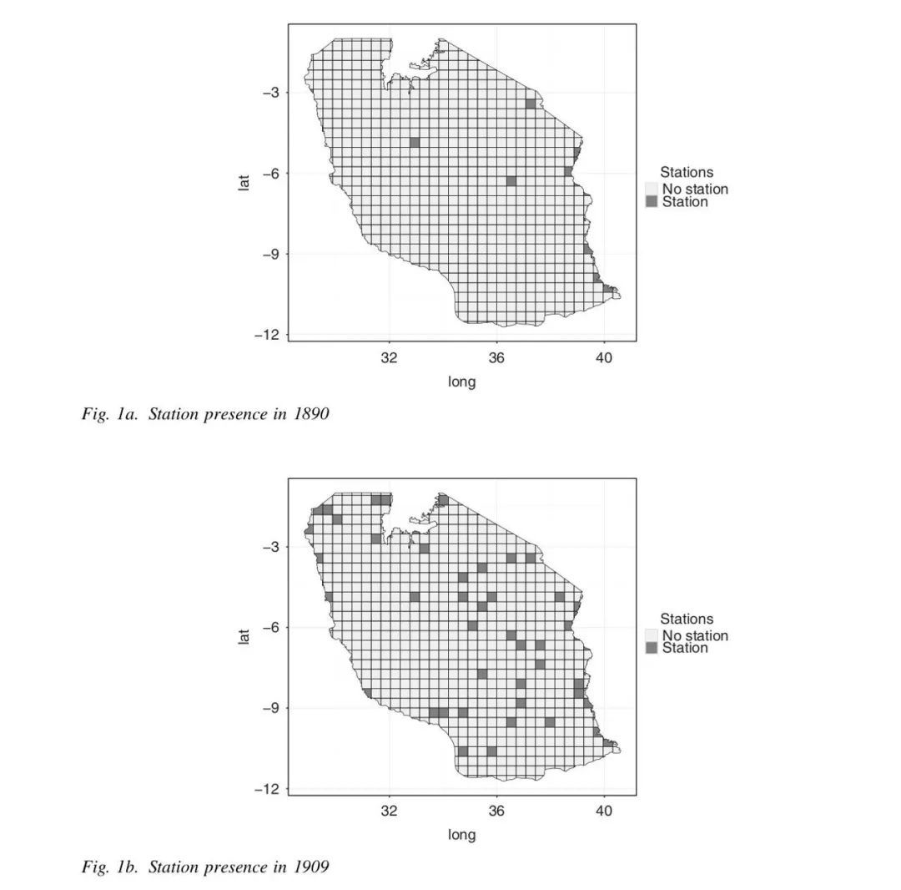
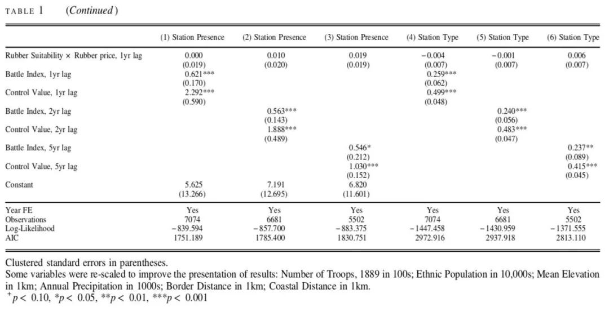

收录于合集
文献来源： Pierskalla, J., De Juan, A., & Montgomery, M. (2019). The Territorial Expansion of the Colonial State: Evidence from German East Africa 1890–1909. British Journal of Political Science, 49(2), 711-737.
作者简介： Jan Pierskalla，俄亥俄州立大学政治学和公共管理系副教授；Alexander De Juan，德国全球和区域研究所高级研究员；Max Montgomery, 德国全球和区域研究所博士生。

引言
在国家建设的早期阶段，影响国家建设在领土范围内推进的因素是什么？基于对德属东非殖民地的经验材料，本文的作者发现，在国家建设的早期阶段，最大化领土控制和维持社会秩序的要求是国家建设在领土范围内推进的主要动力。
所谓的国家建设的早期阶段通常有三个主要特征。第一，国家发起了国家建设的进程；第二，国家建设的目标是有限的；第三，这一阶段的国家建设存在着国家能力与领土规模的不匹配。这一阶段下的国家要在弱国家能力、资源缺乏、关于地方的信息缺乏的配置下，在多族群或有竞争性社会组织的情形中展开国家建设。
国家建设一般何时会进入具有上述特征的阶段呢？实际上，不论过去还是现在，这一种情形下的国家建设是广泛存在的。例如，18-19世纪廓尔喀王国通过大规模扩张形成了今天的尼泊尔。或是前殖民时代的布隆迪王国，他所征服的领土是其在17、18世纪初始领土的好多倍。或是埃塞俄比亚19世纪向南的扩张。在这些新征服的领土上，国家都处于国家建设的早期阶段。此外，内战后的国家构建往往也具有国家建设早期阶段的三个特点。在许多持续数十年的内战中，双方往往能够向国家一样有效控制自己占据的区域。当内战结束后，国家实际上需要在原对手领土上重新开始国家建设的进程。最后，殖民地建设通常也符合国家建设早期阶段的特征，尤其是在撒哈拉以南的非洲。在瓜分非洲的柏林会议之前，殖民帝国对非洲土地的实际控制十分有限。在一战之前，所有的殖民帝国只能用非常有限的资源推进国家建设，从而为未来殖民地自然资源的有效汲取打基础。
理论与假设
与私人性质的殖民行动者（如传教士或贸易商）不同，国家往往把领土控制和维持秩序放在汲取资源的前面。作者认为（殖民）国家建设是一个划定势力范围和在声称具有统治权的领土上建立实际存在的过程。首先，由于自身的相对弱势，殖民国家在维持秩序和控制上承受着巨大的内部压力。他的权威不可避免地受到竞争性社会组织的挑战，这些组织要保护自己的权力不受国家的侵犯。而国家越脆弱，他的稳定性就越依赖于其不断表明自己能够迅速而残酷镇压任何形式反抗的决心和能力。从殖民当局的角度来看，反对者的行动侧面反映了国家的脆弱性，从而激发了更多的反抗，因此会威胁到整个国家建设的成败。其次，1885年的柏林会议中，各殖民帝国协定所有殖民国家都有义务确保其在占领的地区确立权威。无法控制殖民地，特别是无法制止大规模暴乱将成为软弱的象征，这会在国际和国内损害殖民帝国的权威。最后，确保领土控制和安全是所有其他类型的国家行动（例如汲取资源）的前提条件。在大多数殖民地，其主要的财富来自于税收和农业，这些都依赖于强制劳动，即要求对人对控制。叛乱行为不仅阻抑投资而且还从殖民控制中汲取了稀缺的资本和人力。
在国家构建的早期阶段，最大化领土控制并巩固其权威是首要目标，成本与收益则是次一级的考虑。因此，国家在向下渗透时不会避开那些离控制中心较远的区域。他们反而会致力于填补领土控制的空白。就像基林格雷在尼日利亚所做的那样，将殖民地的军事总部置于新征服领土的核心位置，以显示权威并阻止任何形式的叛乱。将国家存在下渗到较为边缘的地区能够服务于早期国家建设的主要目标：它增加了当地居民接触国家权力象征的可能性，并减少了向领土内任何地点部署部队所需要的时间。因此，国家能力的建设更可能存在于那些有着高领土控制价值的地区。
由此作者提出了假设1：一个地区的控制价值越高，国家存在下渗至此的可能性越高
如果在国家建设早期阶段，国家的首要考虑是领土控制和维持秩序，那么所能得出的第二个推论是：相对于结构性因素，当局对国家建设进行下渗时更倾向于回应实际的暴力对抗。诸如阿西莫格鲁等学者都提出，国家受其所治理的社会特征的限制，行政机构会以根据相应结构条件能够最有效运转的方式来部署和运转。但作者认为，在国家建设的早期阶段，行政当局实际上缺乏关于各个地区的准确信息。在信息缺乏、不准确的情况下，第一手的经验往往会成为决策的主要依据，而暴力反抗的情况又是在早期阶段最为重要的信息，因此作者认为国家机构的扩张往往会基于各地对当局的暴力对抗情况。
由此作者提出了假设2：一个地区先前出现的暴力水平越高，国家存在下渗至此的可能性越高。
数据与测量
1.数据来源
在德国的殖民地，区(Districts)是唯一正式且有意义的基本行政单位。但是这一层级的行政单位相对较大，其所涵盖的领土范围异质性较强，因此作者将整个殖民地分解为450个50乘50公里大小的方块并形成网格。分析数据的主要来源是德国殖民办公室从1892-1914年针对殖民地情况制作的年度报告，其中围绕社会和政治议题进行了详尽的统计。第二个数据来源是由殖民政府和其他机构（例如殖民地和传教士协会）制作的一系列专题地图。这些地图呈现了军事和宗教站点的位置，以及各种各样的工厂和道路的地理分布情况。第三个数据来源是殖民地官员Nigman的个人记录，他之前是德国殖民管理部门的一名少校。他记录了德国在殖民地的军事站点位置和暴力冲突情况。
2.因变量
在德国对殖民地的控制中，殖民站点（station）的作用怎么强调也不过分。殖民当局主要依靠各个殖民站点来显示存在，所有与国家相关的功能都要依靠各个站点来执行。因变量主要有两种，一是该网格单元是否存在站点的二分变量；二是站点的类型，类型的跨度从没有站点到低水平军事站点到完全到民事站点。
3.自变量
根据研究假设，自变量也主要有两种，一是领土控制价值，二是当地居民的抵抗程度。对领土控制价值测量的基本思路是，估测每个没有殖民站点的网格的位置对于巩固整个殖民地的领土控制有多大价值。具体而言，作者会计算每个网格单位i对于其最近的站点所在的网格单位j的最短距离。接着作者会测算如果一个新的站点设置在i中，那么这个最短距离会发生什么样的改变。这一变化反应该网格单位的领土控制价值。第二个因变量来自于Nigman的记录，他的书中记载了1889-1910年间德国殖民地部队发生的全部武装冲突，共计235次，其中有200次记载了冲突发生的具体位置，可供作者编码利用的冲突涵盖其中的166次冲突。由此，作者为每个网格单元构建了一个冲突指数，反应着该地对殖民统治的抵抗程度。由于国家机构的下渗需要时间，因此所有对自变量的测量都做了了一年、两年和五年的滞后处理。

结果与结论

回归分析结果参见上图（控制变量部分省略）。所有滞后期数下的冲突指数和领土控制价值都与站点存在和站点类型这两个因变量呈现显著的正相关关系，作者的两个假设都得到了验证。
经典的国家建设理论主要强调了结构性因素对国家扩张和巩固模式的塑造作用。然而，本文发现驱动德国非洲殖民当局进行国家建设的主要动力是政治稳定和领土控制。这使得国家建设优先在那些之前存在暴力抵抗或有利于最大化领土控制的地区推进。与关于外部威胁、军事竞争和国家能力在国家层面关系的理论相一致，这一研究证明了：实际的和预期的暴力也可能影响次国家一级国家建设的地理格局。这一研究对国家建设过程对阐释建立在国家建设早期阶段的情景之上，即国家对其宣称统治的领土仅仅有纸面上的权威却没有通过国家的权力机关来落实。最后作者还提出了对国家建设早期阶段的长期影响进行研究的一条可能进路。即关注在独立后长期处于“准国家”状态下的国家，他们在没有外部挑战者的情况下在特定领土上建立了法律上的权威，但其国家能力弱小、且无力向其国内民众提供公共物品。
编译：赵德昊 审校：杨端程 编辑：康张城
【政文观止Poliview】系头条号签约作者